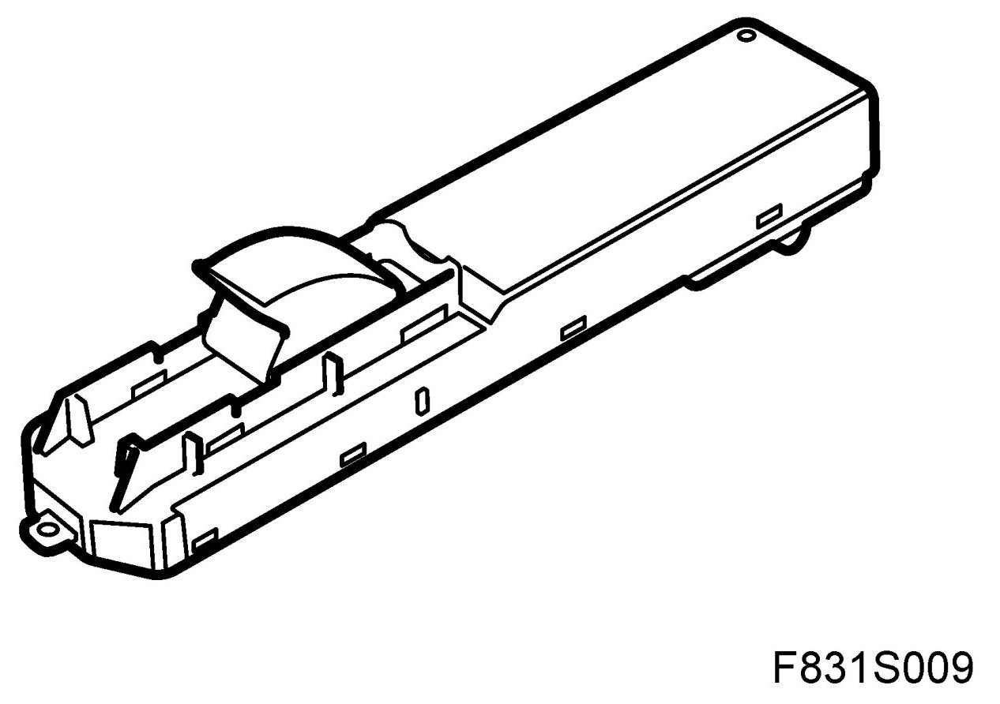
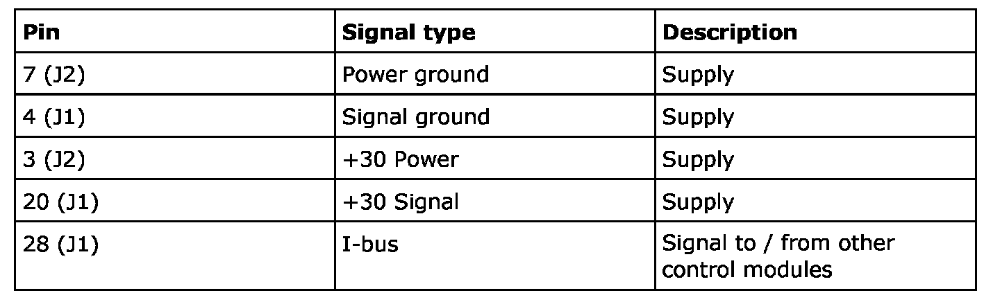
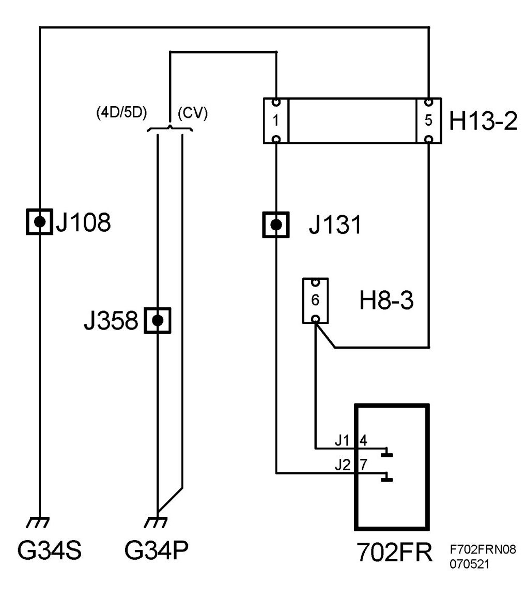
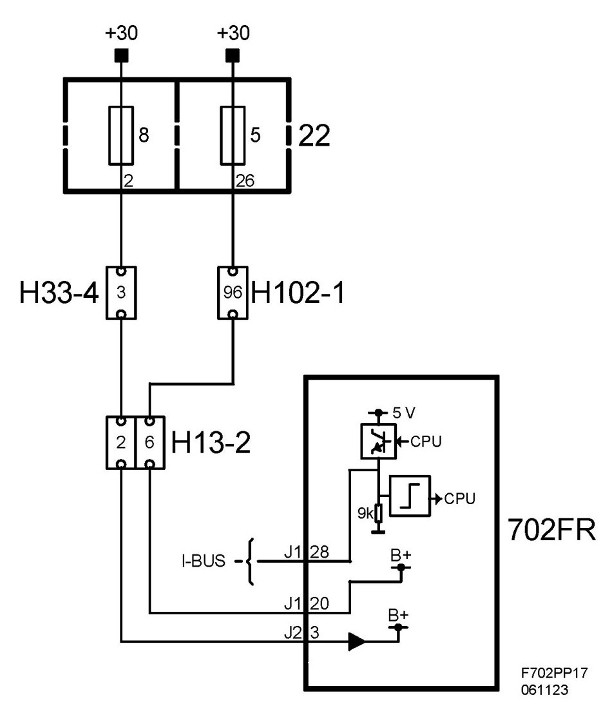

Control Module, Door, Front, Right (702FR)
Control Module, Door, Front, Right (702FR)
Location
Control module, door, front, right (702FR)

Main task
The primary function of the PDM is to:
- Read the window lift button status
- Control and supply the window lift in the passenger door (with optional pinch protection function).
- Supply the passenger door mirror motor and mirror heating (with optional memory function and electrically operated retraction).
- Read the central locking button status and transmit the value on the bus.
- Supply the central locking system motor (with or without TSL) in the door.
- The control module also reads the door switch status with an individual lead but does not use the value. The connection is intended for future development.
- Supply the illumination of the door buttons.
- Supply the courtesy lighting mounted on the bottom edge of the door.
- The PDM is also included in the car's "immobilising environment" and continuously transmits an ID number on the bus.
Type
The PDM has an external button for the window lift in the door. The button has the following positions:
- Express up (only with the pinch protection option)
- Unaffected
- Down
- Express down
Internally there is a microprocessor with clock, RAM and a flash EPROM. An internal bus which connects the processor and memory with the I/O unit. The I/O unit is responsible for reading in the values of A/D converted analogue inputs, digital inputs, bus signals and for activating transistors in the output amplifier.
For further information about the control module see Control module, general description
Illustration showing the component removed
Power supply, ground and bus communication


